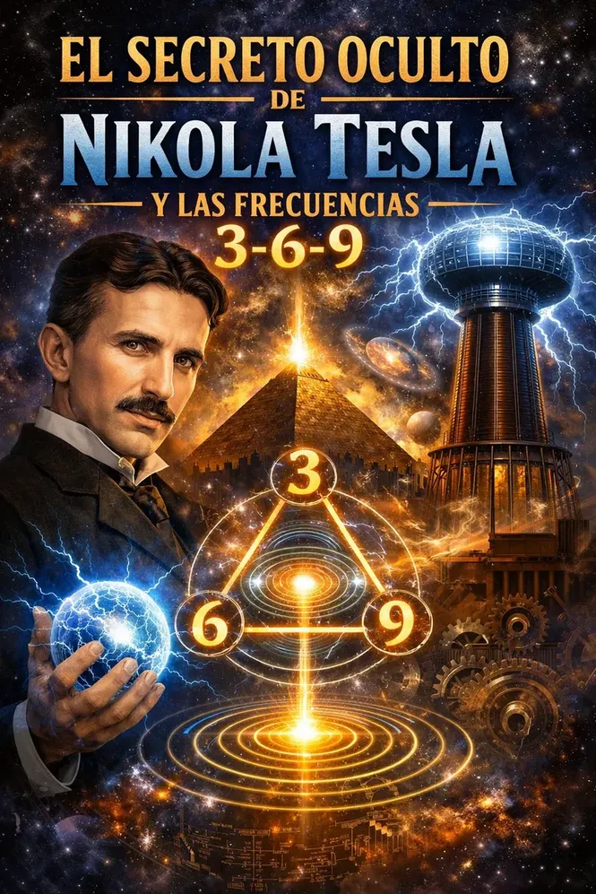

¿Alguna vez has sentido que trabajas de sol a sol, repites afirmaciones frente al espejo, aplicas la ley de atracción y aún así la estabilidad financiera o la paz mental parecen esquivarte? No estás solo. Millones de personas se encuentran atrapadas en un bucle invisible de frustración, intentando descifrar cómo manifestar dinero rápido con frecuencia 369 o buscando desesperadamente una salida al agotamiento mental. Sin embargo, la respuesta no está en esforzarte el doble, sino en entender la arquitectura oculta de la realidad que un genio incomprendido descubrió hace más de un siglo.
Nikola Tesla no solo inventó el sistema de corriente alterna que ilumina el planeta; descubrió el mapa matemático de la creación. Él solía repetir una frase magistral que la ciencia moderna recién está comenzando a validar: "Si quieres encontrar los secretos del universo, piensa en términos de energía, frecuencia y vibración." En las notas privadas del físico de origen serbio, existía una obsesión casi mística por los números 3, 6 y 9. Para Tesla, estos dígitos no representaban simples cantidades matemáticas, sino la clave fundamental del **secreto nikola tesla 3 6 9 manifestacion** que conecta el plano físico con la energía pura del cosmos.
El código oculto del universo: ¿Por qué el 3, 6 y 9 dominan la materia?
Para comprender por qué tu cerebro no está materializando los resultados que deseas, primero debes entender la matemática de vórtice. Si analizas el comportamiento de la naturaleza, notarás que casi todo sigue un patrón de duplicación: 1 se convierte en 2, 2 en 4, 4 en 8, 8 en 16 (1+6=7), 16 en 32 (3+2=5)... En este patrón infinito jamás aparecen los números 3, 6 y 9. ¿Por qué? Porque representan una dimensión superior, un vector de fuerza por el cual fluye la energía pura desde el campo cuántico hacia el mundo material:
- El número 3: Representa la entrada de la energía, la chispa inicial, la intención pura y el enlace con el subconsciente creativo.
- El número 6: Actúa como el puente electromagnético que balancea la materia, la forma y la densidad del plano físico.
- El número 9: Es el vórtice absoluto, el punto de convergencia divina, el dominio del espíritu sobre la materia y el cumplimiento total del ciclo.
Cuando logras alinear la frecuencia del cerebro con esta matriz matemática a través de un audio binaural para desbloquear abundancia, la resistencia subconsciente se disuelve. Los patrones limitantes implantados en tu mente desde la infancia son borrados no con voluntad, sino con física acústica pura. Tu campo electromagnético cambia de polaridad y comienzas a atraer sincronicidades, oportunidades financieras e ideas brillantes de manera pasiva.
La trampa digital: Por qué los audios de YouTube para insomnio y abundancia no funcionan
Si ya has intentado escuchar tonos isoćrónicos, música de meditación o frecuencias Solfeggio en internet, es altamente probable que te hayas preguntado por qué los audios de youtube para insomnio no funcionan ni logran cambiar tu realidad económica. La razón es un secreto técnico que las grandes plataformas de streaming esconden para ahorrar ancho de banda y servidores.
Para que la estimulación sonora penetre la barrera hemisférica del cerebro y active la glándula pineal, la señal acústica debe ser emitida en espectro puro de alta resolución. Cuando utilizas archivos comprimidos, el cerebro detecta la distorsión digital como un ruido caótico en lugar de una frecuencia armónica. En lugar de relajarte o reprogramar tu subconsciente, generas micro-estrés neuronal. Es como intentar sintonizar una estación de radio HD con una antena oxidada.
¿Listo para activar el código 3-6-9 en su versión acústica pura?
Descubre cómo la tecnología de neuroestimulación pasiva de QuantumAudio® entrega el espectro completo en formato WAV Máster de 24 bits, eliminando los bloqueos financieros y el insomnio desde los primeros 15 minutos de escucha.
Ver demostración de QuantumAudio®Reprogramación subconsciente pasiva: Tu cerebro en la frecuencia de la riqueza
La mente humana opera en diferentes bandas de frecuencia electromagnética. Durante la mayor parte del día, mientras te preocupas por las deudas o el trabajo, tu cerebro emite ondas Beta elevadas (entre 15 y 30 Hz). En este estado de supervivencia, la puerta de entrada a la mente subconsciente está herméticamente cerrada. Puedes repetir diez mil veces un decreto de riqueza, pero si estás en ondas Beta, la orden rebotará contra tus barreras analíticas.
Para reprogramar la mente de manera instantánea se requiere la tecnología del arrastre de ondas cerebrales (Brainwave Entrainment). Al enviar frecuencias ligeramente diferentes a cada oído a través de ondas de alta definición, el cerebro se ve forzado a equilibrar ambos hemisferios, descendiendo automáticamente a frecuencias Alfa (8-12 Hz) y Theta (4-7 Hz). Es justamente en estas frecuencias donde el código 3-6-9 de Tesla opera su milagro biológico.
"Había probado decenas de audios en YouTube sin ningún resultado real. Sentía la cabeza pesada y no lograba dormir bien. Cuando probé el formato máster no comprimido de QuantumAudio® afinado en el código 3-6-9, a los tres días recibí el pago de un proyecto que daba por perdido. La claridad mental y el sueño profundo que experimentas son de otro planeta."
— Carlos M., Ingeniero y Emprendedor
La diferencia irreversible: YouTube MP3 vs. QuantumAudio® WAV Máster 24-bit
No todos los audios son creados iguales. A continuación te mostramos la comparativa técnica de por qué la tecnología neuroacústica pura supera a cualquier contenido convencional disponible en la red:
| Característica | Audio Convencional (YouTube/MP3) | QuantumAudio® (WAV Máster 24-bit) |
|---|---|---|
Un método 100% pasivo para manifestar riqueza, calmar la mente y reconectarte
La mayor ventaja de la tecnología desarrollada alrededor del código Tesla no es solo la ciencia detrás de sus armónicos, sino la facilidad con la que se integra a tu vida diaria. Vivimos en una época donde el tiempo es el activo más valioso. Nadie tiene dos horas libres al día para sentarse en posición de loto a intentar acallar la mente.
Con la neuroestimulación avanzada, no necesitas tener experiencia en meditación, no necesitas creer ciegamente en el misticismo ni realizar complicados rituales diarios. El proceso es puramente físico y neurofisiológico:
- Aislamiento Acústico: Te colocas tus auriculares preferidos en la comodidad de tu cama o sillón.
- Reproducción de Alta Definición: Inicias la pista máster en calidad pura sin pérdida de frecuencias.
- Sintonización Automática: En menos de 15 minutos, las ondas binaurales arrastran a tu cerebro fuera de la rumiación Beta, abriendo el subconsciente directamente a las frecuencias armónicas 3-6-9.
Desbloquea el poder oculto del código 3-6-9 hoy mismo
No dejes que los algoritmos de compresión sigan bloqueando tu potencial financiero y tu descanso. Accede al sistema definitivo de QuantumAudio® y experimenta la verdadera neuroacústica máster sin esfuerzo.
Obtener Acceso Instantáneo a QuantumAudio®3 Pautas de uso para maximizar el impacto de la frecuencia Tesla
Si estás decidido a transformar tu vibración y pasar de la escasez a la manifestación fluida, aplica estos tres principios fundamentales al comenzar tu entrenamiento con frecuencias puras:
- Coherencia Neuronal Diaria: Escucha tu pista de QuantumAudio® durante al menos 21 días consecutivos para consolidar las nuevas vías sinápticas.
- Cero Distracciones Digitales: Desactiva las notificaciones de tu teléfono móvil durante la sesión de escucha para permitir que la glándula pineal responda a la estimulación armónica.
- Estado de Intención Pasiva: No luches contra los pensamientos recurrentes. Simplemente deja que la onda sonora de 24 bits haga el trabajo de reseteo biológico por ti.
El universo no responde a lo que quieres con desesperación; responde exactamente a la frecuencia exacta en la que tu mente está vibrando en este instante. Nikola Tesla dejó el código al descubierto para quien tuviera la sabiduría de escucharlo en su estado más puro. La decisión de reconfigurar tus patrones subconscientes y acceder a un nuevo nivel de riqueza, salud y paz mental está hoy al alcance de un solo clic.